06 · Predicción de Churn (ML)

Resaltado, lo que ya construiste en la ruta hasta este punto; en gris, lo que todavía viene.
⏱️ Tiempo: 30 min · 📍 Dónde: un notebook · 🧰 Lo que usas: Notebooks, MLflow, Models en Unity Catalog
Hasta aquí miraste el churn que ya pasó. Ahora vas a anticiparte: entrenar un modelo que estima la probabilidad de que cada cliente cancele y guardar el resultado en una tabla de scores. Este es el ejercicio puente: ese score alimenta los agentes, las ofertas y la app de los próximos módulos.
🙌 No necesitas programar. El notebook ya trae el flujo listo y explicado celda por celda. El foco es entender qué se construye y para qué.
🎯 Al terminar vas a…
- Tener en tu schema el modelo
modelo_churn, registrado y gobernado en Unity Catalog - Tener la tabla
churn_scoresconprob_churn,nivel_riesgo(Alto/Medio/Bajo) y elfactor_principalde cada cliente
🧠 Conceptos de Databricks de este módulo
| Concepto | Qué es |
|---|---|
| Machine Learning (ML) | Programas que aprenden de ejemplos. Aquí: de 2.000 clientes que cancelaron o no, aprende qué comportamientos anticipan el churn |
| Features (variables) | Las "pistas" que usa el modelo: uso, horas, atraso de pago, CSAT, NPS, plan y segmento (tabla feature_churn) |
| Entrenamiento / prueba | El modelo aprende con el 75% de los clientes y se evalúa con el 25% restante, que nunca vio |
| AUC | La nota del modelo: 0,5 = adivinar al azar · 1,0 = perfecto |
| MLflow | La herramienta de Databricks que registra los modelos: métricas, versiones y el modelo en sí |
| Models en Unity Catalog | El modelo queda gobernado como una tabla: dueño, permisos, versiones y linaje |
| Score | La probabilidad de churn de cada cliente (de 0 a 1) |
✅ Antes de empezar
Paso 1: Ejecutar el notebook
- En el menú lateral izquierdo, haz clic en Workspace
- Abre tu Git folder del curso → carpeta
06 - Predicción de Churn (ML)→ notebooknotebook_modelo_churn> ¿No tienes el Git folder? Workspace → ⋮ → Import → URL y pega >https://raw.githubusercontent.com/carolinaacarneiro/from-zero-to-hero-business/main/06%20-%20Predicci%C3%B3n%20de%20Churn%20%28ML%29/notebook_modelo_churn.py - Arriba a la derecha, haz clic en Connect y elige
fromzerotohero_workshop_cluster - Ejecuta las celdas en orden (Shift + Enter) hasta la celda de código debajo de Paso 1 — Configura tu schema: aparece el campo Tu schema (arriba del notebook o en el panel lateral Parameters) > La primera celda instala bibliotecas y reinicia Python: es normal que tarde unos segundos
- Escribe tu schema en el campo Tu schema (ej.:
ggarcia) - Haz clic en Run all
En unos 2 a 4 minutos el notebook instala las bibliotecas, entrena, registra el modelo y guarda la tabla de scores. Mientras corre, lee las explicaciones de cada paso en el notebook.
Paso 2: Revisar el resultado
Al final del notebook, verifica:
✅ Checkpoint 1: AUC (prueba) ≈ 0,97. El modelo separa muy bien a quienes cancelan de quienes se quedan.
✅ Checkpoint 2: distribución de riesgo (churn_scores):
| Nivel de riesgo | Clientes | Prob. promedio |
|---|---|---|
| Alto | ~492 | ~0,82 |
| Medio | ~133 | ~0,36 |
| Bajo | ~1.375 | ~0,06 |
✅ Checkpoint 3: factor principal de cada cliente: Insatisfacción (CSAT), Bajo uso, Morosidad o Detractor (NPS). Es la "explicación de negocio" que va a aparecer en la app.
💡 ¿Por qué "factor principal"? Un score solo dice cuánto riesgo hay. El factor dice por qué, y eso es lo que permite actuar: no se retiene igual a un cliente que paga tarde que a uno insatisfecho con la atención (lo vas a ver en el Ej. 8).
Paso 3: Ver lo que creaste en Unity Catalog
- En el menú lateral izquierdo, ve a Catalog →
fromzerotohero→<tu_schema> - En Models, abre
modelo_churn: mira su versión 1 y, en ella, la métricaauc - En Tables, abre
churn_scoresy mira la pestaña Sample Data
💡 El modelo es un activo gobernado: tiene dueño (tú), permisos y linaje, como cualquier tabla. Si mañana entrenas una versión mejor, se registra como versión 2 sin perder la anterior.
🎯 Desafío
Vuelve a tu dashboard Análisis de Churn <tu_schema> y crea una nueva página (pestaña) de predicción. Pídele a Genie Code indicadores y gráficos usando fromzerotohero.<tu_schema>.churn_scores y fromzerotohero.churn.dim_cliente. Por ejemplo:
En una nueva página llamada Predicción, usando fromzerotohero.<tu_schema>.churn_scores y fromzerotohero.churn.dim_cliente, crea: un KPI con la cantidad de clientes de riesgo Alto, un gráfico de barras de clientes por nivel de riesgo y una tabla con los 10 clientes de mayor prob_churn con su factor_principal.
🧯 Si algo sale mal
| Síntoma | Qué hacer |
|---|---|
Error en la celda de %pip install |
Vuelve a ejecutarla; si persiste, avisa al instructor (el cluster necesita salida a Internet para instalar bibliotecas) |
PERMISSION_DENIED al registrar el modelo |
Revisa que escribiste tu schema (no el de otra persona) |
SCHEMA_NOT_FOUND |
Crea tu schema (Ej. 1, Paso 3) y vuelve a hacer Run all |
| El AUC es un poco distinto (ej.: 0,96) | Es normal; lo importante es que sea alto (> 0,9) |
📌 Lo que aprendiste
- Un modelo de ML aprende del pasado para estimar el riesgo de cada cliente
- MLflow + Unity Catalog registran el modelo como un activo gobernado, con versiones
- La tabla de scores convierte el modelo en algo que el negocio usa: quién está en riesgo y por qué